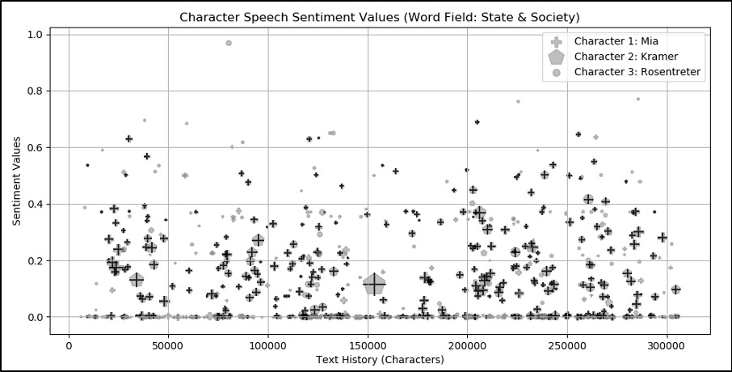
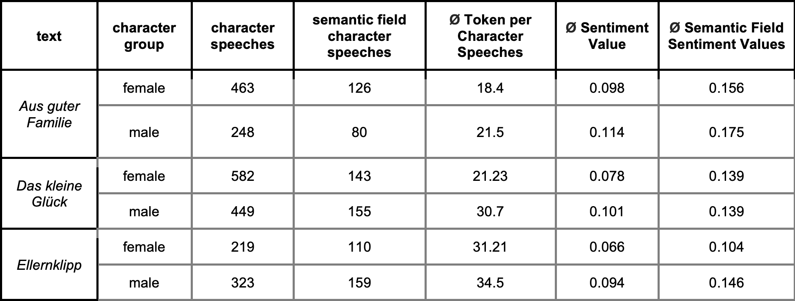
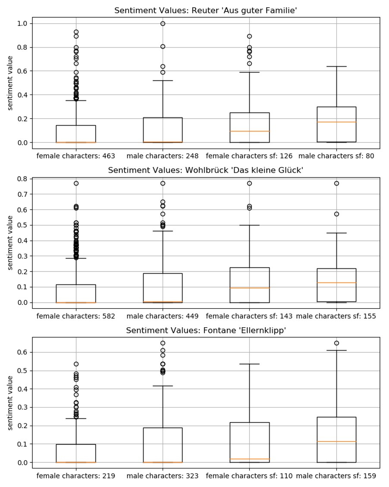
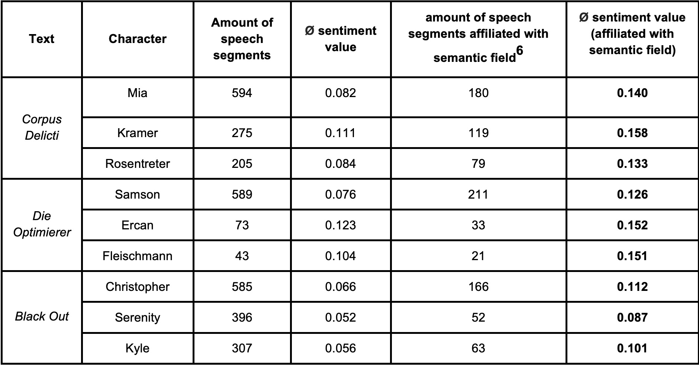

Sentiment analysis for literary texts
Sentiment analysis has been used for fictional texts for about 15 years now, with a focus on plots and the development of characters.1Despite some interesting findings, sentiment analysis methods seem not to be directly deployable for literary text analysis yet. In addition to general problems (creation of suitable dictionaries, recognition of negations and other dependency-related changes in meaning), the high complexity of literary language and text structure as well as the considerably higher number of potential opinion targets or holders of sentiment (cf. Liu 2012: 18) are problematic.
In comparison to the still challenging high complexity of language (i.e., metaphors, irony, and other forms of improper speech), tackling text structure and sentiment holders seems more straightforward. A feasible use of sentiment analysis rooted in literary studies should therefore combine (i) simple, but established procedures for sentiment analysis with (ii) more elaborate understandings of texts and their entities.
We tried to implement this by developing the approach presented in this contribution.2 With two adjustments we made sentiment analysis more adequate for literary text analysis:
Implementation
For our two experiments we automatically extracted direct speech and manually annotated speakers for six exemplary texts from corpora of the hermA project4. We also created the semantic fields 'state and society' and 'illness'.5 Then a sentiment value was determined for each speech segment consisting of the sum of all values provided by the SentiWS sentiment lexicon (Remus et al. 2010), normalized by their number. Finally, speech segments including words from the pertaining semantic fields were identified.
Figure 1: example of sentiment analysis in character speech based on semantic fields (Zeh: Corpus Delicti, crosses indicating semantic field segments)
Thus, we analyzed when, to what extent and with which sentiment values character speak as well as their relation to certain topics. The results concerning our research interests are sketched briefly below.
Example 1: Gender and Illness
In our first experiment with novels from around 1900, general sentiment sensitivity resulted higher for male than for female characters (cf. Table 1 and Figure 2). Interestingly, this difference almost levels out in segments containing the semantic field 'illness'. Therefore, while showing general differences between female and male speech around 1900, our sentiment approach proves useful for looking closer at the relation between gender and certain topics as well.
Table 1: Overview of annotations and sentiment scores of Aus guter Familie, Das kleine Glück und Ellernklipp
Figure 2: sentiment sensitivity of female and male characters from Aus guter Familie, Das kleine Glück und Ellernklipp (general and semantic field (sf)-related values)
Example 2: Dystopias as Genre
In the second experiment we examined whether in contemporary dystopian novels the presumably crucial semantic field of state and society is sentiment sensitive. The values in Table 2 show that character speech about state and society in dystopias tends to be emotionalized. Thus, topic-related sentiment sensitivity seems to be an interesting feature for the automatic detection of dystopia as a genre.
Table 2: sentiment sensitivity of character speech (with and without affiliation to the semantic field of ‘state and society’) in dystopian novels
In summary, our concept of sentiment sensibility, as calculated by sentiment analysis, seems to be an appropriate way of dealing with the ambiguity of literary texts and the interests of literary scholarship.
References
Primary Texts:
Research Literature:
Adelmann, Benedikt; Andresen, Melanie; Begerow, Anke; Franken, Lina; Gius, Evelyn; Vauth, Michael (2019): Evaluation of a Semantic Field-Based Approach to Identifying Text Sections about Specific Topics. Digital Humanities 2019 Conference Paper.
Alm, Cecilia Ovesdotter; Sproat, Richard (2005): Emotional Sequencing and Development in Fairy Tales. In: Affective Computing and Intelligent Interaction: First International Conference, ACII 2005, Beijing, China, Proceedings, pp. 668-674.
Becker, Martin; Hettinger, Lena; Hotho, Andreas; Jannidis, Fotis; Reger, Isabella; Zehe, Albin (2016): Prediction of Happy Endings in German Novels based on Sentiment Information. In: Proceedings of DMNLP, Workshop at ECML/PKDD, pp. 9-16.
Bülthoff, Heinrich; Gerdemann, Dale; Meurers, Detmar; Mohler, Betty; Volkova, Ekaterina (2010): Emotional Perception of Fairy Tales: Achieving Agreement in Emotion Annotation of Text. Proceedings of the NAACL HLT 2010 Workshop on Computational Approaches to Analysis and Generation of Emotion in Text, pp. 98-106, 2010.
Burghart, Manuel; Dennerlein, Katrin; Schmidt, Thomas (2018): Kann man denn auch nicht lachend sehr ernsthaft sein? Zum Einsatz von Sentiment-Analyse Verfahren für die quantitative Analyse von Lessings Dramen. In: Book of Abstracts DHd 2018, pp. 244-248.
Jacobs, Arthur (2019): Sentiment Analysis for Words and Fiction Characters From the Perspective of Computational (Neuro-)Poetics. In: Frontiers in Robotics and AI.
Landt, Matthias (2013): Sentiment Analysis as a Tool for Understanding Fiction (only available as pdf).
Liu, Bing (2012): Sentiment Analysis and Opinion Mining. Synthesis Lectures on Human Language Technologies 16. San Rafael: Morgan & Claypool.
Mohammad, Saif (2011): From Once Upon a Time to Happily Ever After: Tracking Emotions in Novels and Fairy Tales. In: Proceedings of the 5th ACL-HLT Workshop on Language Technology for Cultural Heritage, Social Sciences, and Humanities, pp. 105–114.
Remus, Robert; Quasthoff, Uwe, Heyer, Gerhard (2010): SentiWS - a Publicly Available German-language Resource for Sentiment Analysis. In: Proceedings of the 7th International Language Resources and Evaluation (LREC'10), pp. 1168-1171.
[1] See for example the analysis of fairy tales (Alm 2005, Bülthoff 2010, Mohammed 2005), dramas (Burghart 2018), booklet novels (Becker et al. 2016), youth literature (Jacobs 2019) and fanfiction (Landt 2013).
[2] We have programmed all analyses in Python and will make them available with explanations and the resources used as Jupyter notebooks for subsequent use.
[3] In the next step of our work, we will also include character description.
[4] Cf. https://www.herma.uni-hamburg.de. Three texts were taken each from the corpora of the project “Gender and Illness” and the project “Dystopia as Genre” (cf. primary texts in the reference section).
[5] The semantic fields were created based on the approach presented in Adelmann et al. (2019).
[6] Speech segments containing at least one word from the semantic field are categorized as being affiliated to it.